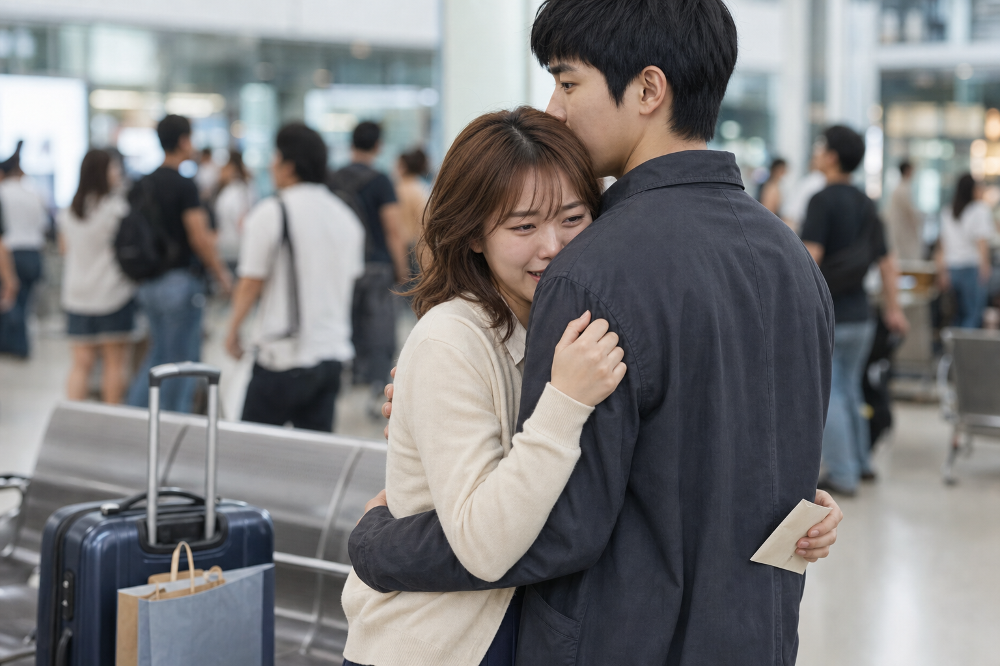

078. 게이트 너머
캐리어 바퀴가 좁은 골목 바닥의 자갈을 밟을 때마다 작은 소리를 냈다.
원룸을 나서기 전, 두 사람은 현관에 나란히 서서 텅 빈 방을 한 번 더 돌아봤다. 여름 내내 살림처럼 지냈던 공간인데, 캐리어 하나가 빠져나가자 방은 이상하리만치 넓어 보였다. 유즈키는 열쇠를 손에 쥔 채 문을 닫았다.
역까지 가는 길에 두 사람은 일부러 먼 골목으로 돌았다. 처음 팔짱을 꼈던 은행 앞, 늘 저녁을 사 먹던 슈퍼 앞을 차례로 지났다. 유즈키는 그 앞을 지날 때마다 별말 없이 걸음만 조금 늦췄다. 용식도 그 속도에 맞춰 걸었다. 익숙했던 풍경이 오늘따라 낯설게 느껴졌다.
공항으로 가는 특급열차 안에서 유즈키는 무릎 위에 손을 얹고 창밖만 봤다. 논밭과 전선이 스쳐 지나가는 동안 두 사람 다 말이 없었다. 나리타에 가까워질수록 안내 방송이 짧게 짧게 끊겨 들렸다. 용식은 그 방송 소리를 들을 때마다 남은 시간을 헤아렸다.
공항 로비는 여름 휴가철답게 사람들로 붐볐다. 체크인 카운터 앞에서 캐리어 무게를 재는 동안, 유즈키는 옆에 서서 표를 만지작거렸다.
[김용식] "간당간당하게 통과했어요."
짧은 대화조차 평소보다 뜸을 들이며 나왔다. 체크인을 마치고 시간이 조금 남아, 두 사람은 출국장 앞 상점가를 걸었다. 과자와 화장품이 진열된 매대 앞에서 용식의 걸음이 멈췄다. 그는 잠깐 망설이다가 립밤 하나와 포장된 화과자 상자를 집어 들었다.
[김용식] "그냥, 한국 가면 챙겨야 될 사람이 있어서요."
유즈키는 그 말에 더 캐묻지 않았다. 대신 계산대 앞에 선 그의 옆얼굴을 잠깐 바라보다가, 시선을 진열대 쪽으로 돌렸다. 표정에 큰 변화는 없었지만, 손끝이 매대 유리를 톡톡 두드리는 속도가 조금 빨라졌다. 용식은 그 손을 봤지만 아무 말도 덧붙이지 않았고, 유즈키도 더는 묻지 않기로 한 자신의 다짐을 다시 확인하듯 입을 다물었다.
계산을 마친 봉지를 캐리어 옆주머니에 넣은 뒤, 두 사람은 다시 걷기 시작했다. 출국장 게이트 앞 벤치까지 함께 걸었다. 그 이상은 유즈키가 들어갈 수 없는 구역이었다. 벤치에 앉자 유즈키가 가방에서 작은 종이봉투를 꺼내 그에게 내밀었다.
[김용식] "지금 보면 안 돼요?"
그 말을 하는 그녀의 눈에는 이미 물기가 어려 있었다. 용식은 봉투를 재킷 안주머니에 넣었다. 얇고 가벼운 무게였는데, 그 안에 무엇이 들었는지 짐작조차 하지 못한 채 무게가 이상하게 느껴졌다.
[김용식] "여름 내내 고마웠어요."
유즈키는 무릎 위에 손을 얹은 채 발끝으로 바닥을 톡톡 두드렸다. 하고 싶은 말이 더 있는 듯했지만, 입 밖으로 나오지는 않았다. 대신 그녀는 가방끈을 만지작거리며 고개를 숙였다가, 다시 들었다.
[김용식] "어디로 가도 찾을게요."
그 말에 유즈키는 짧게 웃었다. 웃음 끝이 아까보다 더 떨렸다. 탑승 시간을 알리는 안내 방송이 흘러나왔다. 유즈키가 자리에서 일어섰다. 두 사람은 잠시 마주 서서 서로를 바라봤다. 주변으로 다른 여행객들이 바쁘게 지나갔지만, 그 짧은 순간만큼은 공항의 소음이 멀게 느껴졌다.
[김용식] "겨울에 올게요, 진짜로."
[김용식] "안 잊어요."
유즈키가 먼저 팔을 뻗어 그를 안았다. 얼굴을 그의 어깨에 묻은 채 한동안 움직이지 않았다. 그녀의 어깨가 조용히 떨리는 게 느껴졌다. 용식은 그 등을 감싸 안으며, 지금 이 순간을 눈에 새기려는 듯 눈을 감았다. 향수 냄새와 여름 공기 냄새가 뒤섞여 코끝에 남았다.
먼저 손을 놓은 건 유즈키였다. 그녀는 눈가를 손등으로 닦으며 억지로 미소를 지어 보였다. 용식은 캐리어 손잡이를 쥐고 게이트 쪽으로 몸을 돌렸다. 몇 걸음 걷다가 뒤를 돌아봤다. 유즈키는 그 자리에 그대로 서서 손을 흔들고 있었다.

보안 검색대 앞에 서서 그는 한 번 더 뒤를 돌아봤다. 인파 사이로 유즈키의 모습이 점점 작아지다가, 결국 시야에서 완전히 사라졌다. 용식은 그제야 앞으로 몸을 돌려 검색대 안으로 들어갔다.
탑승구 앞 대기실 창밖으로 활주로에 서 있는 비행기들이 열을 지어 있었다. 용식은 그 풍경을 멍하니 보다가, 재킷 안주머니에 손을 넣어 봉투를 매만졌다. 아직 열지 않았다.
기내에 앉아 안전벨트를 채운 뒤, 그는 무릎 위에 봉투를 올려뒀다. 비행기가 활주로를 달리기 시작하자 창밖 풍경이 빠르게 흐려졌다. 이륙 후 기체가 완전히 수평을 잡을 때까지, 그는 봉투를 뜯지 않고 그대로 쥐고만 있었다.
옆자리 승객이 헤드폰을 끼고 눈을 감았다. 기내 안내방송이 일본어와 영어로 번갈아 흘러나왔다. 용식은 창밖으로 점점 멀어지는 육지를 내려다보며, 열여섯 밤 동안 세었던 날짜가 이제 정말 끝났다는 걸 실감했다. 봉투는 여전히 그의 손안에서 뜯기지 않은 채 놓여 있었다.
승무원이 음료 서비스를 마치고 지나간 뒤에도, 그는 봉투를 열지 않았다. 인천까지 남은 시간을 생각하면 지금 열어도 될 텐데, 어쩐지 착륙 직전까지는 그 안의 내용을 미뤄두고 싶었다. 대신 재킷 안주머니 위로 손바닥을 가만히 얹은 채, 창밖의 구름을 오래 바라봤다. 캐리어 옆주머니에 넣어둔 화과자 상자가, 지금은 다른 사람의 얼굴을 떠올리게 했다. 용식은 그 생각을 애써 밀어내며 눈을 감았다.